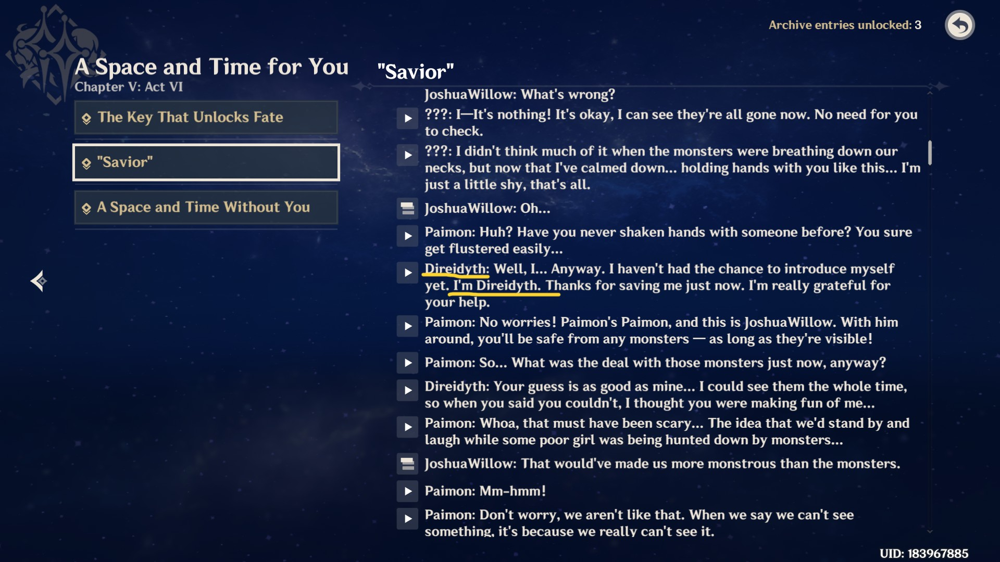

架空世界研究
Researches of Fantasy Worlds/ Conworlds

概况 Overview
本人的架空世界研究包括但不限于自创的架空世界和受许可的对他人创作的架空世界的研究。
本人的架空世界目前仍在制作中。
The contents include the handmade conworld and the permitted researches of other conworlds.
My own conworld is still in process now.
研究成果 Productions of My Researches
目前我的研究成果主要还是涉及语言学方面。包括但不限于：
“You did not stop me”谣言
蒂莱尔词源简考
伊德海莉词源简考
索琳蒂丝词源简考
须弥雨林文字的字形原型
以上内容均发布于米游社中，可在我的米游社个人页中搜索到。